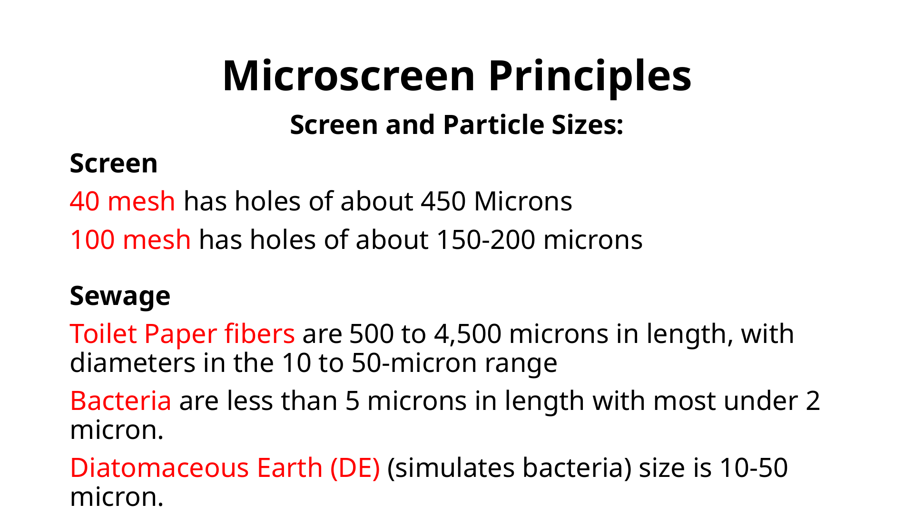

Demonstrations: Making FECR Visible
The demonstration program is one of the strongest parts of the FECR story. It lets utilities see the process, test locations, and document performance with their own wastewater.

See-through model slide showing how the microscreen demonstration is explained.
Two demonstration tools
- Transparent model: helps people understand fiber capture, belt movement, and why dewatering matters.
- Trailer-mounted unit: allows real plant testing at multiple locations in the treatment process.
This section should eventually include photos, short videos, test protocols, and field results.
Demonstration data should feed the technical library and later the design manual.